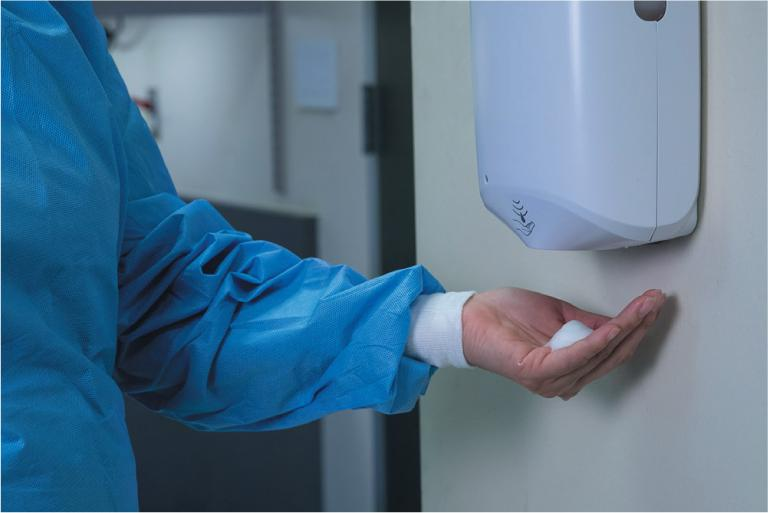
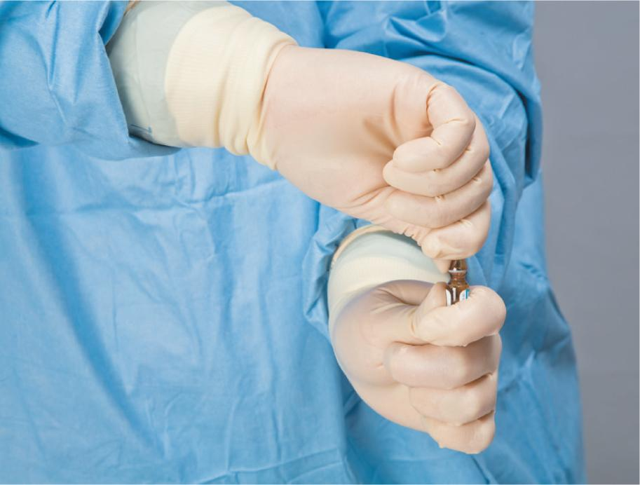
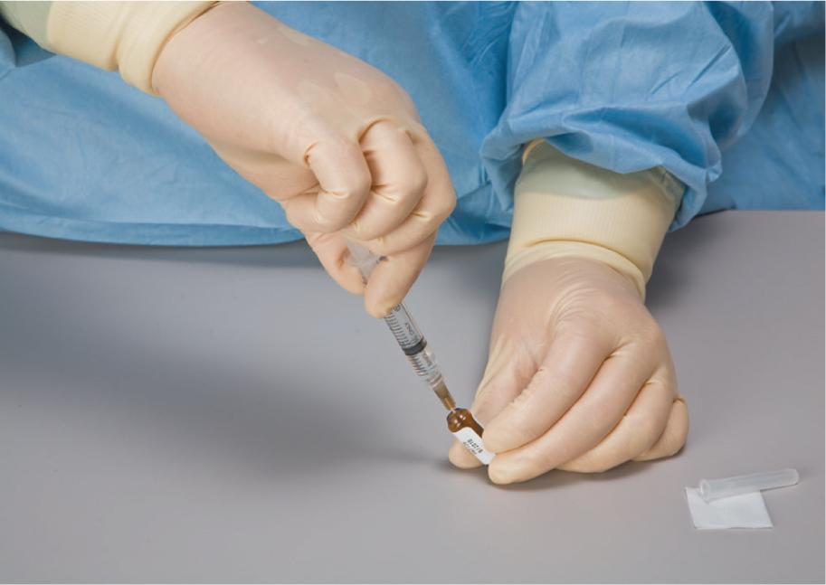
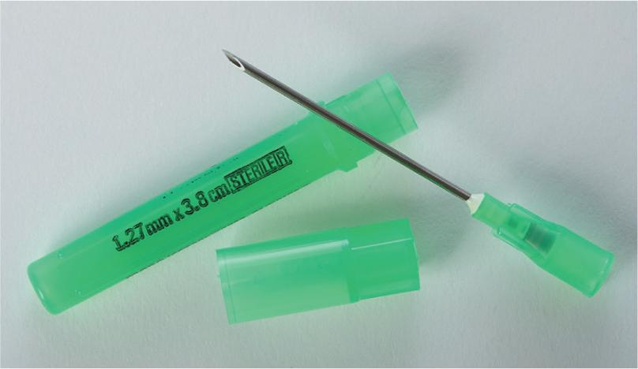
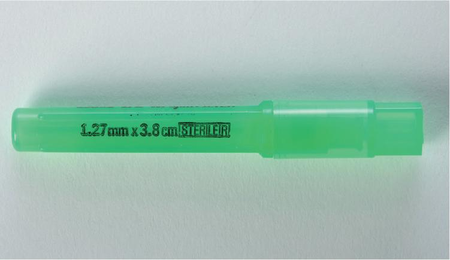

Part 2: Training
12.6 Preview the Procedural Lab
Now that you, as a sterile compounding student, have a basic understanding of the components and critical sites of the supply items used in ampule-based preparations, you have the opportunity to preview—and subsequently perform—the sterile compounding of an ampule-based preparation using aseptic technique.
First, read the Preview the Procedural Lab section. Then carefully read each step of the Procedural Lab section. Next, reinforce your understanding by watching the demonstration video. Once in the lab, your instructor will demonstrate the procedure, and then you will perform the procedure by following the steps in the Procedural Lab section. After sufficient practice, you will complete the procedural lab for competency assessment that will be observed by your instructor.
Note: This procedural lab requires the use of a horizontal laminar airflow workbench. For pharmacies that do not have this type of PEC, sterile compounding personnel should consult the Instruction Guide provided by the PEC’s manufacturer or their facility’s SOPs to determine which procedures may need to be adjusted to suit their PEC.
Anteroom Preparatory Procedures
For the purposes of this lab, preparation for the sterile compounding process begins in the anteroom. However, in practice, some procedures may be performed before entering the anteroom, depending on a facility’s SOPs. The anteroom provides a transition space for implementing the procedures discussed in Chapters 5–8 of this textbook, including:
- verifying the CSP label against the medication order
- performing pharmacy calculations to determine type, size, and number of supply items needed
- gathering and staging supplies
- performing hand hygiene
- donning garb.
Verifying the CSP Label
The first step in the preparation of an IVPB solution is verification of the CSP label. Sterile compounding personnel should check that the CSP label is legible and accurate by comparing the CSP label to the prescriber’s medication order. Although in some facilities this step is performed by a pharmacist, it is considered best practice for both the pharmacist and a sterile compounding technician to perform this task. Implementing this double-check system helps to reduce the likelihood of a medication error.
With that in mind, you should compare the medication order to the CSP label to verify that the following items match exactly: the name, strength, and amount or quantity of the drug or additive; the name, concentration, and volume of the base solution; and the designated IV flow rate or administration time. (For additional assistance in reading and understanding medication orders, labels, and common abbreviations, refer to Chapter 6 and Appendix A of this textbook.)
Performing Pharmacy Calculations
Once you have verified the accuracy of the CSP label, you need to identify the type, size, and number of supply items needed for the procedure. Using information gleaned from the CSP label and the label on each medication or additive, calculate the desired volume of each additive or ingredient to be used in the procedure. The desired volume is the volume that you must withdraw from the ampule to deliver the dose ordered by the prescriber. (For additional assistance on performing calculations, refer to Chapter 7 of this textbook.)
Gathering and Staging Supplies
Once all calculations are complete, place the CSP label into a small plastic bag, place the medication order into a large plastic bag, and seal both bags. Gather and wipe down all of the necessary compounding supplies with an appropriate agent before bringing them into the clean side of the anteroom. (For detailed information on the USP <797> protocol for this anteroom procedure, refer to Chapter 10.)
Donning Garb
Now that you have assembled and wiped the exterior surfaces of necessary supplies, you must don garb, a requirement for working in the buffer room. Before donning garb, ensure you are wearing close-toed shoes and either a clean scrub uniform or other approved, lightweight, nonshedding clothing and that you have removed cosmetics, jewelry, and other items prohibited in the sterile compounding area. Then don shoe covers; a head cover and, if necessary, a facial hair cover; a face mask; and a gown. Apply an alcohol-based hand rub to all surfaces of hands and fingers and allow your hands to dry before donning sterile gloves. (Note: This procedure may also be performed in the buffer room.)
Due to time constraints, your instructor may decide that you will not perform hand-washing procedures during this procedural lab. Keep in mind that, in sterile compounding practice, handwashing is mandatory and must be performed prior to donning sterile gloves. If you are performing this procedural lab in a working cleanroom suite, you must perform all hand hygiene and garbing procedures before entering the buffer room.
Buffer Room Preparatory Procedures
When preparing ampule-based preparations for patient administration, sterile compounding personnel must diligently follow established buffer room procedures. These procedures, discussed in Chapters 8 and 9, include the following actions:
- sanitizing hands with an alcohol-based hand rub
- donning sterile gloves
- cleaning and disinfection of the PEC.
Due to time constraints, your instructor may decide that you will not perform PEC cleaning and disinfection procedures during this procedural lab. Keep in mind that, in sterile compounding practice, PEC cleaning and disinfection procedures are mandatory and must be performed prior to beginning sterile compounding procedures and at intervals prescribed by USP <797>.

Arranging and Preparing Supplies in the PEC
Upon entering the buffer room, place the transport basket or tray onto a clean table or cart. If the transport vehicle used is a cart, wheel it so that it is positioned away from the PEC’s prefilter. If not performed previously, sanitize your hands with an alcohol-based hand rub, allow your hands to dry thoroughly, and then don sterile gloves.
Next, wipe your sterile gloves with sterile 70% IPA and allow your gloved hands to dry thoroughly. Then transfer the sterile compounding supplies into the PEC. Prior to introducing each supply item into the PEC, wipe the exterior surface of the item with sterile 70% IPA using a sterile, low-lint wiper and allow it to dry before use. When a sterile item is received in a sealed container designed to keep it sterile until opening, you do not need to wipe the exterior surface of the container. The sterile item may be removed from the container as the item is introduced into the PEC.Place small supply items—such as the needle; syringe; sterile 70% IPA swab; and tamper-evident, sterile, adhesive seals—in the outer six-inch zone of the PEC, which is used as a staging area prior to bringing the supplies into the direct compounding area (DCA) of the PEC. Alternatively, small supply items may be placed to the left or right of the DCA. Place the ampule in the DCA.
Before placing the IVPB base solution bag in the DCA of the PEC, remove the bag’s dust cover. To do so, locate the tear line on the dust cover and tear open the outer packaging along this line. Remove the IVPB base solution from the dust cover and discard the cover into an appropriate waste container. Then place the IVPB bag in the DCA, or at least six inches inside the PEC. Be sure to position the injection port of the IVPB bag (in this case, a tail injection port) so that it receives uninterrupted airflow from the PEC’s HEPA filter.
Ampule-Based Compounding Procedure
With the small supply items arranged in the outer six-inch zone and the ampule and IVPB bag placed in the DCA, you are ready to begin the ampule-based compounding procedure. Wipe your sterile gloves with sterile 70% IPA and allow your gloved hands to dry thoroughly. Then pick up the ampule and gently tap or swirl the container to clear the ampule’s head and neck of fluid. Next, tear open the package of a new, sterile 70% IPA swab and use the swab to wipe the neck of the ampule. Then place the swab onto the PEC’s work surface within the DCA and the empty swab package into the start of a discard pile. Prepare the syringe by aseptically attaching a capped regular needle. (Note: You will use a regular needle first and a filter needle second in this lab procedure, unless directed otherwise by your instructor. However, in practice, always refer to your facility’s SOPs.)
Now, hold the body of the ampule firmly but gently so that your thumb and fingers of your hand are situated below the neck of the ampule. Grasp the head of the ampule between the thumb and forefinger of your other hand so that the fingers are situated above the ampule neck.
While holding the ampule steady, use the thumb and forefinger to gently but firmly snap the ampule neck. Always snap the ampule away from you, never toward you. The ampule should break cleanly at the neck. Temporarily place the ampule body onto the PEC’s work surface within the DCA so that the ampule’s opening—now a critical site—receives uninterrupted airflow from the HEPA filter. Discard the ampule head into the sharps container.

Wipe sterile gloves with sterile 70% IPA and allow to dry thoroughly. Grasp the barrel of the needle-and-syringe unit and then carefully remove the the cap of the regular needle. Set the cap, with its open end pointed toward the HEPA filter, onto the IPA swab that you previously placed on the PEC’s work surface. Hold the ampule body with the thumb and forefinger, taking care not to touch or shadow the opening of the ampule at any time. With the needle bevel pointing down, insert the tip of the regular needle into the ampule so that it is completely immersed in the fluid inside the ampule.

While keeping the ampule in an upright position and while maintaining the tip of the needle in the fluid within the ampule, pull back on the flat knob of the plunger with the thumb or forefinger. (Note: You do not need to inject air into the ampule to equalize the pressure because the ampule is an open container.) Continue to pull back on the flat knob of the plunger until you have drawn up slightly more than the desired volume. Remove your finger from the flat knob, and grasp the syringe as you would a dart. Holding only the barrel of the syringe, carefully remove it from the ampule. Temporarily place the ampule body onto the PEC’s work surface within the DCA. Carefully recap the regular needle.
Hold the barrel of the syringe with the capped needle pointing upward. Tap the syringe barrel to force bubbles up toward the syringe tip (see Figure 12.3). Pull down slightly on the flat knob of the syringe to draw fluid from the needle into the syringe. Notice that this action creates a small air pocket at the tip of the syringe. Expel the air pocket from the syringe and gently, and very slowly, push up on the flat knob just until the fluid in the syringe meets the “colored part” of the needle hub. Immediately release your thumb from the flat knob as soon as the fluid meets the needle hub to avoid the expulsion of fluid into the needle cap. Accidental fluid expulsion could result in droplet contamination of the PEC, supply items, and the CSP, which is a potentially dangerous situation.
View long description Hide description
a) The syringe containing air bubble in fluid is placed with the needle tip pointing up. The labels are rubber stopper and needle cap.
b) The plunger is pulled back resulting in fluid flowing from needle into syringe and formation of air pocket.
C) The plunger is pushed eliminating the bubbles leaving fluid only. The label reads, colored part of the needle hub.
Closely examine the filled, capped, and bubble-free syringe. Determine which measurement point on the syringe barrel exactly matches the desired dose volume. If, at this point in the procedure, you already have the desired dose volume correctly drawn up in the syringe, temporarily place the syringe onto the PEC’s work surface within the DCA.
If you determine there is more fluid in the syringe than is necessary to deliver the desired dose volume, you must inject the excess fluid back into the ampule body. To do this procedure, remove the needle cap and place it onto the IPA swab. Be sure that the open end of the cap is pointed toward the HEPA filter. Then brace the ampule body against the PEC’s work surface with your hand. Grasp only the barrel of the syringe and carefully insert the needle tip back into the ampule body. Gently push on the flat knob of the plunger with the thumb until you have expelled the excess fluid and have achieved the desired dose volume in the syringe. Once you have the desired dose volume, immediately release your thumb from the flat knob. Holding the syringe like a dart, remove it from the ampule and carefully recap the needle. Temporarily place the capped syringe onto the PEC’s work surface within the DCA.
Place the supply items and ingredients used in the preparation of the CSP into the DCA of the PEC, and ask for a verification check by your instructor or a pharmacist. Once the check has been completed, grasp the syringe and pull down slightly on the flat knob of the plunger, thereby drawing any fluid contained in the regular needle into the syringe. Twist off the entire capped needle and temporarily place it onto the PEC’s work surface within the DCA.
Hold the filled syringe with the syringe tip pointing toward the HEPA filter. Without setting down the syringe, use your fingers to open the filter needle package and remove the capped filter needle. Taking care not to touch or shadow the syringe tip or needle hub, aseptically twist the capped filter needle hub onto the syringe tip. Temporarily place the capped filter needle-and-syringe unit within the DCA.
Arrange the supply items and ingredients used for the CSP—including the used, capped regular needle—for a verification check by your instructor or a pharmacist. Once the check has been completed, reposition the IVPB bag and needle-and-syringe unit within the DCA of the PEC so that the injection port of the IVPB base solution bag and the entire needle-and-syringe unit receive uninterrupted airflow.
Open a new, sterile 70% IPA swab package, remove the swab, and place the empty swab package into the discard pile. Wipe the tail injection port of the IVPB bag and then place the used IPA swab onto the PEC’s work surface, directly under the injection port. Then use aseptic technique to inject the medication into the IVPB base solution bag. Properly label the IVPB bag and affix a tamper-evident, sterile, adhesive seal over the injection port.

